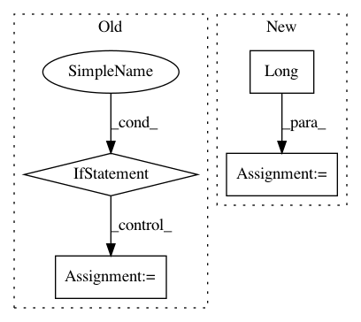

1a73a1367fedfa8368b6c42103e60e1b370bc14a,catalyst/contrib/criterion/focal_loss.py,FocalLoss,forward,#FocalLoss#Any#Any#,11
Before Change
// TODO refactor
def forward(self, outputs, targets):
if targets.size() != outputs.size():
raise ValueError(
f"Targets and inputs must be same size. "
f"Got ({targets.size()}) and ({outputs.size()})"
)
max_val = (-outputs).clamp(min=0)
log_ = ((-max_val).exp() + (-outputs - max_val).exp()).log()
loss = outputs - outputs * targets + max_val + log_
invprobs = F.logsigmoid(-outputs * (targets * 2.0 - 1.0))
After Change
if cls == self.ignore:
continue
cls_label_target = targets[..., cls].long()
cls_label_input = logits[..., cls]
loss += sigmoid_focal_loss(
cls_label_input,
In pattern: SUPERPATTERN
Frequency: 4
Non-data size: 4
Instances
Project Name: Scitator/catalyst
Commit Name: 1a73a1367fedfa8368b6c42103e60e1b370bc14a
Time: 2019-04-19
Author: scitator@gmail.com
File Name: catalyst/contrib/criterion/focal_loss.py
Class Name: FocalLoss
Method Name: forward
Project Name: mozilla/TTS
Commit Name: 0f8936d7440b78581987e7f80bb7fa5d4c96c98d
Time: 2019-06-12
Author: egolge@mozilla.com
File Name: utils/synthesis.py
Class Name:
Method Name: synthesis
Project Name: Scitator/catalyst
Commit Name: 1a73a1367fedfa8368b6c42103e60e1b370bc14a
Time: 2019-04-19
Author: scitator@gmail.com
File Name: catalyst/contrib/criterion/focal_loss.py
Class Name: FocalLoss
Method Name: forward
Project Name: OpenNMT/OpenNMT-py
Commit Name: 625451ab74f1942eb951337554d72005076a51b3
Time: 2017-12-12
Author: dengyuntian@gmail.com
File Name: onmt/Translator.py
Class Name: Translator
Method Name: translateBatch
Project Name: cornellius-gp/gpytorch
Commit Name: 7e9154fdc79281420d027c7892c395946622ee40
Time: 2017-08-25
Author: gpleiss@gmail.com
File Name: gpytorch/lazy/toeplitz_lazy_variable.py
Class Name: ToeplitzLazyVariable
Method Name: __getitem__